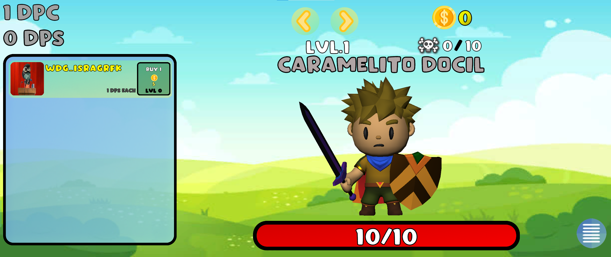

Características generales
Un idle game, o juego inactivo, es un juego que avanza mientras el usuario no está jugandolo. Al empezar, se requiere cierta interacción con él pero a medida que avanzamos podemos dejarlo avanzar solo. Por lo general, este tipo de juegos requieren de hacer clicks y gestionar recursos, por lo que suelen ser llamados "clickers".
Me embarqué en el desarrollo de un juego de este tipo porque me parecen realmente entretenidos, y pese a que no pueda parecerlo desde fuera, generan cierta adcicción y se les dedica mucho tiempo. Cuanto más avanzamos en ellos más vemos cómo están ligados a las matemáticas.
Por poner un par de ejemplos de este tipo de juegos, encontramos "Clicker Heroes", que es en el que está basado mi desarrollo, "Cookie Clicker", tambien llamado "el juego de la galleta", etc...
En la siguiente imagen podemos ver la pinta que tiene, podemos encontrar un enemigo, que es donde hay que hacer click para matarlo y conseguir dinero para comprar recursos que nos ayudarán a matarlos más rápìdo. Estos recursos están situados en el menú de la izquierda y se van desbloqueando nuevos(y mejores) conforme vamos comprándolos. La idea es que vamos avanzando por zonas en las que tenemos que matar a 10 enemigos y cada 10 zonas encontramos un jefe que debemos derrotar si queremos avanzar.
